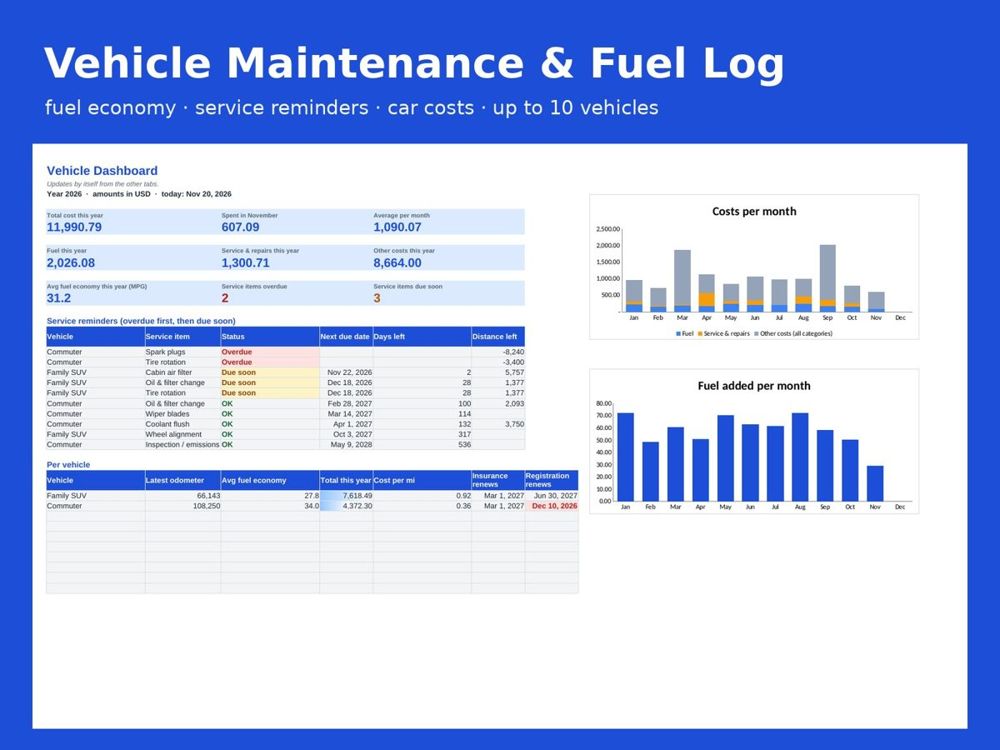

Vehicle Maintenance & Fuel Log (MPG Tracker, Car Service Reminders, Car Expense Tracker) – Excel & Google Sheets
Know what your car really costs and never miss an oil change again. Log every fill-up and the tracker works out your fuel economy (MPG or L/100km), log every service and repair, and set reminders by mileage, by date or both – the dashboard shows what is overdue, what is due soon and your cost per mile for every vehicle.
Get it on Gumroad – US$14, one-time
What's inside
- Up to 10 vehicles: make, model, plate, VIN, starting odometer, insurance and registration renewal dates (highlighted when they come up)
- Fuel log (1,000 fill-ups): price per gallon/liter, distance since last fill and fuel economy from full tank to full tank – partial fills handled
- Miles or kilometers, gallons or liters: MPG or L/100km chosen automatically
- Service log with parts and labor cost – oil changes, tires, brakes, battery, inspections, repairs
- Service schedule with reminders every X miles/km and/or every X months: next due odometer, next due date, Overdue / Due soon / OK
- 'Last done' is read from the service log automatically, so reminders reset by themselves
- Other costs: insurance, registration, loan or lease, parking, tolls, car wash
- Dashboard: total running cost, this month, average per month, fuel economy, cost per mile/km, service reminders, renewal dates, charts
- Monthly view per cost type and per vehicle
- Blank copy plus a sample copy with two cars and a year of data
How it works
- Open the file in Excel, or upload it to Google Drive and open with Google Sheets.
- Read the "Start Here" tab (2 minutes). Yellow cells are yours to fill in, grey cells calculate by themselves.
- Type your own numbers; the dashboard, charts and alerts update as you go.
Questions
Does it work in Google Sheets?Yes. Upload the .xlsx file to Google Drive, open it with Google Sheets, and all formulas, drop-down lists and conditional formatting keep working. No macros are used.
Which Excel versions are supported?Excel 2010 or newer on Windows and Mac, including Microsoft 365. Numbers on iPad/Mac and LibreOffice also open it, with small cosmetic differences.
What do I get after paying?An instant download of a ZIP with two files: a blank copy ready for your numbers and a copy filled with sample data so you can see how every sheet works. Start on the "Start Here" tab.
Can I use my own currency?Yes. Pick the currency symbol once in Settings and every sheet follows.
What if it is not for me?Email within 14 days and you get a refund.